Usage guide¶
Installation¶
IBBI needs Python ≥ 3.11 and PyTorch. Install PyTorch for your hardware first (pytorch.org), then install the package.
conda + pip
conda create -n ibbi python=3.11
conda activate ibbi
# install PyTorch following pytorch.org for your system, then:
pip install ibbi
pixi
pixi init ibbi-project && cd ibbi-project
pixi add python=3.11 pip
pixi run pip install torch torchvision --index-url https://download.pytorch.org/whl/cu128 # or the CPU wheel
pixi run pip install ibbi
pixi run python
Requirements and notes¶
- A CUDA GPU with ≥ 8 GB of memory is recommended; CPU inference works but is slow.
ultralyticsis restricted to>=8.3.139,<8.4: Ultralytics 8.4 changes the predictions of the YOLOv10 and RT-DETR checkpoints.- SAM 3 is gated: accept its licence at https://huggingface.co/facebook/sam3 and run
hf auth login. - Files are cached in
~/.cache/ibbi(IBBI_CACHE_DIRto change,ibbi.clean_cache()to delete). To use weights offline, put each model repository in a folder and setIBBI_MODELS_DIRto it.
Models¶
import ibbi
df = ibbi.list_models(as_df=True) # one row per model, with benchmark numbers
df[df["Task"].str.contains("Zero-shot")]
Create a model by name or alias. Weights are downloaded from the IBBI-bio organisation the first time.
detector = ibbi.create_model("arthropod_detector") # yolo11x_arthropod_detector
codino = ibbi.create_model("codino_arthropod_detector") # larger and more accurate (GPU)
species = ibbi.create_model("species_detector") # yolo12x_species_detector
classifier = ibbi.create_model("hierarchical_classifier") # dinov3_hierarchical_classifier
zero_shot = ibbi.create_model("zero_shot_detector") # grounding_dino_zero_shot_detector
other = ibbi.create_model("rtdetrx_species_detector", device="cpu")
All models have the same core methods:
| Method | Returns |
|---|---|
predict(image or list) |
detectors: {"boxes" (xyxy pixels), "scores", "labels"}; classifier: a hierarchical record |
predict_proba(list of images) |
[N, n_classes] class scores (used by LIME / SHAP) |
extract_features(image) |
an embedding tensor |
get_classes() |
class names (species, "arthropod" or the current prompts) |
Images can be file paths, URLs, RGB numpy arrays or PIL images, alone or in a list (a list returns a list of
results). Every model has a sensible default confidence (conf=0.25 for the detectors); the arthropod and zero-shot
detectors also have an operating_conf (at most ~0.2 false alarms per image on their validation sample).
Which model should I use?¶
| Goal | Use |
|---|---|
| Identify beetles in images that may contain species outside the 65 trained ones | ibbi.create_pipeline() |
| Identify specimens that are already cropped | hierarchical_classifier |
| Count or locate specimens, whatever their species | arthropod_detector |
| The fastest one-step detection when all specimens belong to the 65 species | a species detector |
| Detect something other than arthropods, or with your own wording | a zero-shot detector with text_prompt= |
| Embeddings for clustering or retrieval | feature_extractor |
Examples¶
Two held-out benchmark trays, chosen before running any model: a trained species, Platypus koryoensis
(iid_test), and an unseen species of a trained genus, Platypus cylindrus (semantic_ood), whose correct answer
is "Platypus sp.". Arthropod detector at its operating confidence (0.70), species detector at 0.25, pipeline with
the detector at 0.70 and the gallery operating point, Grounding DINO at its operating confidence (0.60).
| Trained species | Unseen species | |
|---|---|---|
| Input | 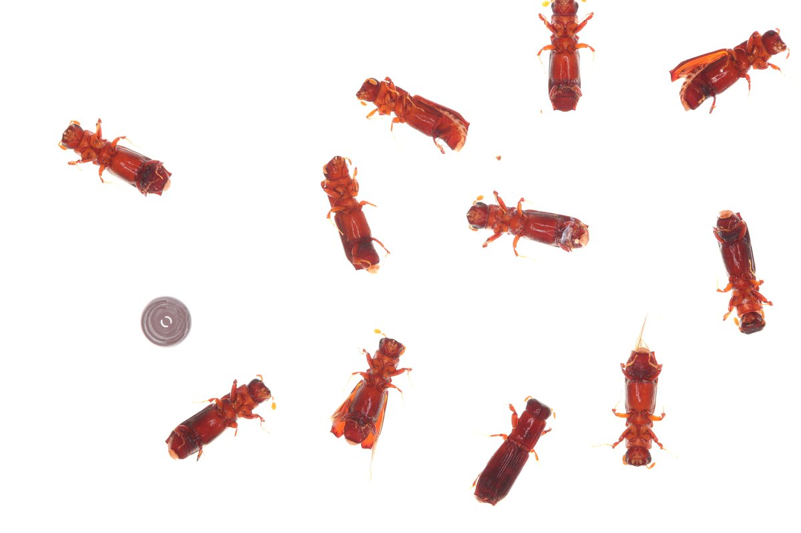 |
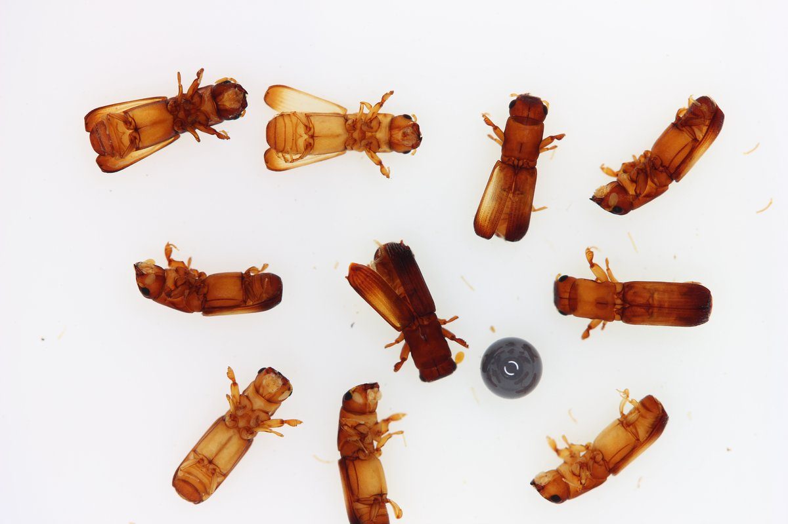 |
| Arthropod detector | 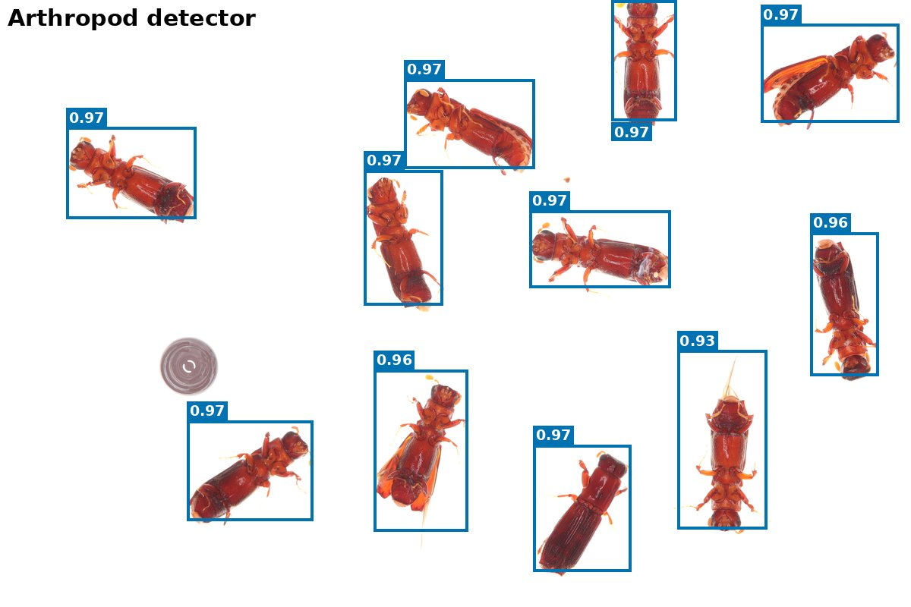 |
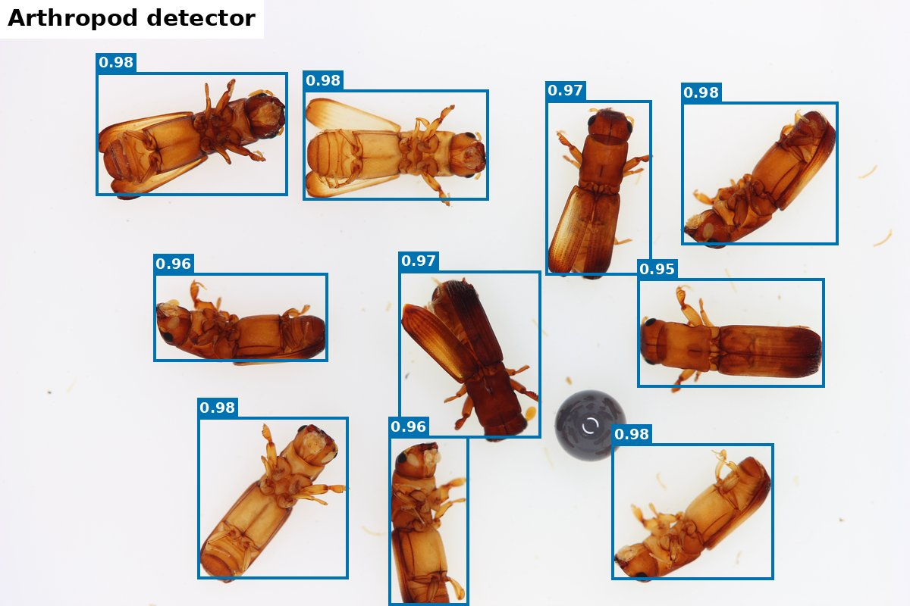 |
| Species detector (YOLO12x) | 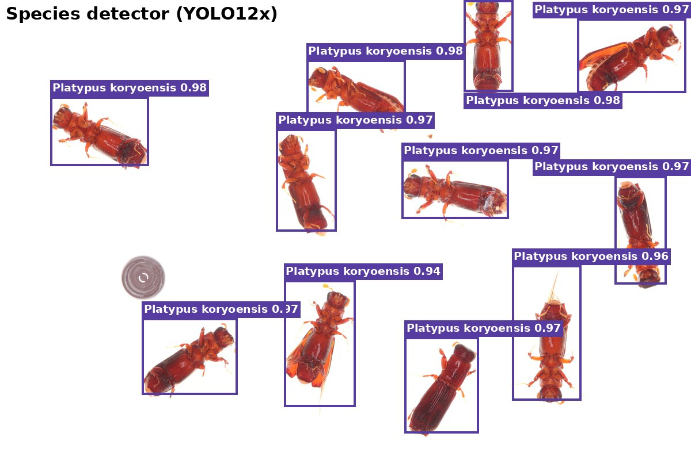 |
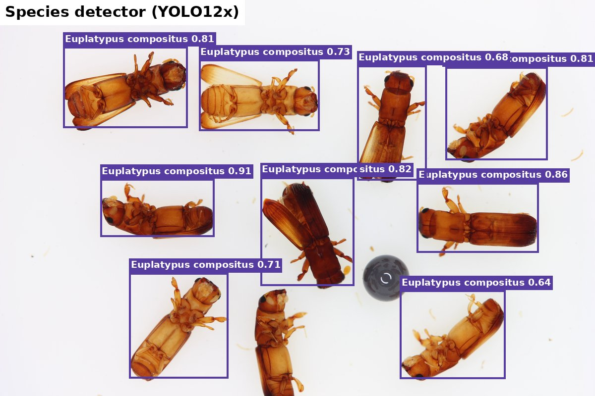 |
| Pipeline (detector + DINOv3) | 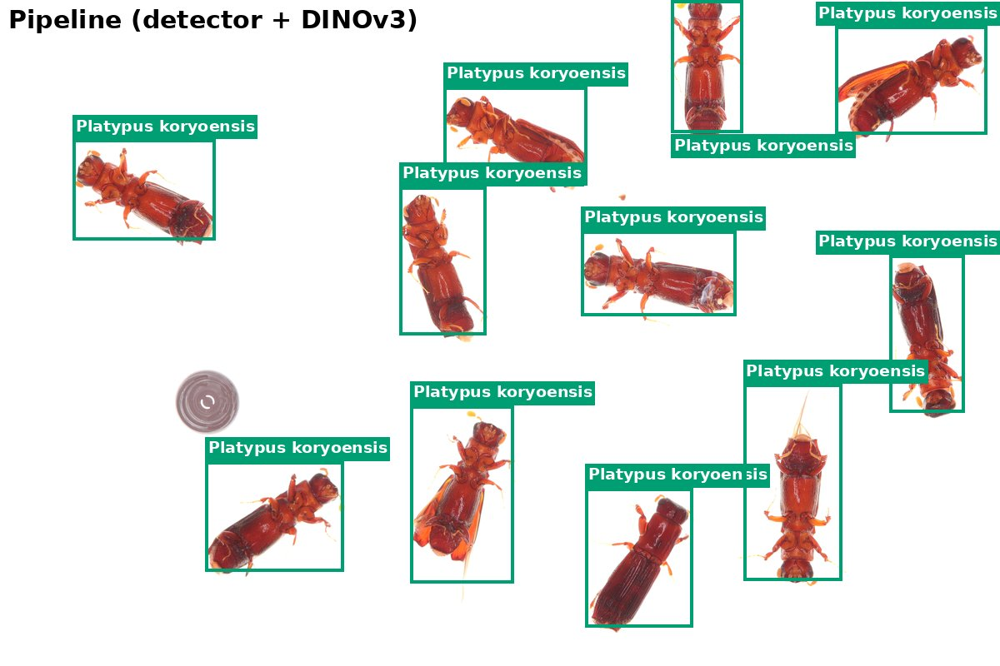 |
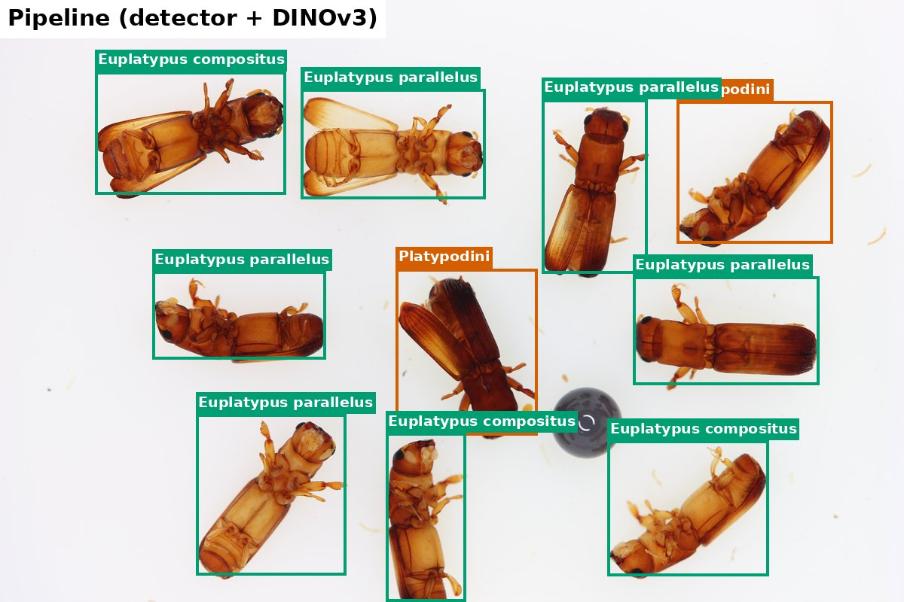 |
| Zero-shot (Grounding DINO) | 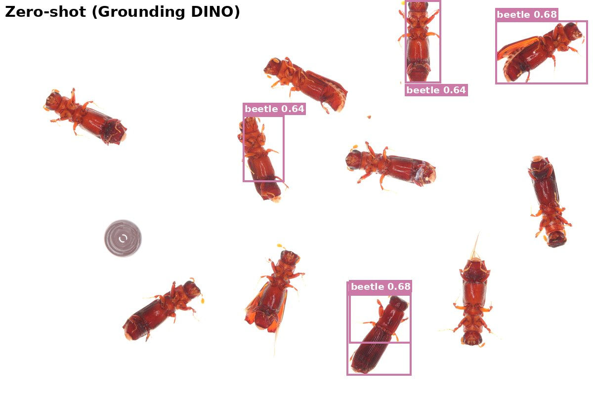 |
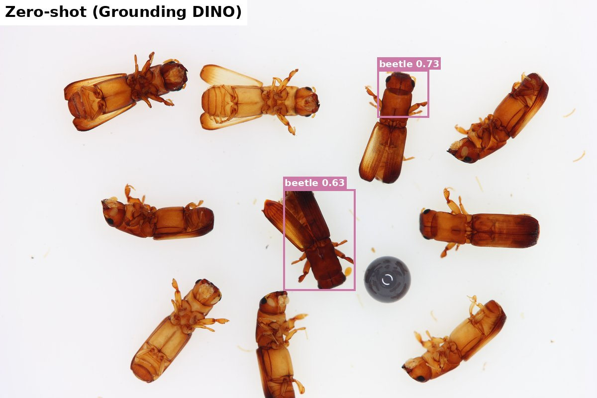 |
Pipeline colours: green = species, orange = genus, dark orange = tribe, pink = subfamily, red = unrecognised.
What the examples show. On the trained species, the arthropod detector finds all 11 specimens and both the
species detector and the pipeline name every one Platypus koryoensis (Grounding DINO, at its strict operating
confidence, finds 5). On the unseen species, the species detector names 9 of the 10 specimens Euplatypus compositus:
a confident answer in the wrong genus, the only kind of answer it can give. The pipeline backs off to the correct tribe
(Platypodini) for 2 specimens but still names a wrong Euplatypus species for the other 8. Over-commitment on unseen
species of trained genera is the main open problem of the classifiers (about 58% of near_genus specimens on the
benchmark; see benchmark results).
Images: Bark and Ambrosia Beetle Detection Benchmark v2.0.1, iid_test/c6c569ff-6a4b-4f0d-b298-8da5e4b9f2b2.jpg
(Averie M. Kulbeda) and semantic_ood/1de1a58e-41c8-4b52-8647-31284228858f.jpg (Isabelle C. Stratton), University of
Florida Forest Entomology Lab, CC BY-NC 4.0. Produced with ibbi v0.3 default models.
Two-stage identification (recommended)¶
pipe = ibbi.create_pipeline() # arthropod detector + DINOv3 hierarchical classifier
res = pipe.predict("plate.jpg")
res["boxes"] # [[x1, y1, x2, y2], ...]
res["det_scores"] # detector confidence
res["labels"] # reported identification, e.g. "Xyleborus volvulus", "Euwallacea sp. (species undetermined)"
res["species"] # the classifier's best species (always one of its 65)
res["classifications"] # full record per detection (below)
With a GPU, the more accurate Co-DINO detector can replace YOLO11x:
ibbi.create_pipeline(detector="codino_arthropod_detector", det_conf=0.65).
Options: ibbi.create_pipeline(detector="arthropod_detector", classifier="bioclip2_hierarchical_classifier",
det_conf=0.7, operating_point="0.95"). det_conf=detector.operating_conf (0.70) gives at most ~0.2 false alarms per
image on the detector's validation sample; the default 0.25 finds more specimens.
The hierarchical record¶
A real record (first specimen of the trained-species example above):
>>> res = ibbi.create_pipeline(det_conf=0.70).predict(image)
>>> res["classifications"][0] # values rounded; "entropy" and the third top3 entry omitted
{
"subfamily": {"taxon": "Platypodinae", "prob": 1.000, "score": 0.401, "threshold": 0.012, "known": True,
"top3": [["Platypodinae", 1.000], ["Scolytinae", 0.000]]},
"tribe": {"taxon": "Platypodini", "prob": 1.000, "score": 0.917, "threshold": 0.051, "known": True, ...},
"genus": {"taxon": "Platypus", "prob": 0.991, "score": 0.595, "threshold": 0.051, "known": True,
"top3": [["Platypus", 0.991], ["Treptoplatypus", 0.004], ["Crossotarsus", 0.002]]},
"species": {"taxon": "Platypus koryoensis", "prob": 0.991, "score": 0.748, "threshold": 0.054, "known": True,
"top3": [["Platypus koryoensis", 0.991], ["Treptoplatypus solidus", 0.004], ["Crossotarsus kuntzeni", 0.002]]},
"depth_by_op": {"0.9": 4, "0.95": 4, "0.99": 4, "gallery": 4},
"depth": 4,
"reported": "Platypus koryoensis"
}
rec = res["classifications"][0]
rec["reported"] # human-readable answer
rec["depth"] # 0 unrecognised, 1 subfamily, 2 tribe, 3 genus, 4 species
rec["genus"] # {"taxon", "prob", "score", "known", "threshold", "entropy", "top3"}
rec["depth_by_op"] # the depth under every operating point: {"0.9": 3, "0.95": 3, "0.99": 4, "gallery": 3}
probis the calibrated probability of the predicted taxon at that level; the levels are consistent (P(subfamily) ≥ P(tribe) ≥ P(genus) ≥ P(species) along the predicted lineage).scoreis the novelty score: the percentile of the specimen's familiarity among known validation beetles (higher = more familiar).knownisscore >= threshold.- The reported depth is the deepest level such that every level above it is known.
Operating points¶
| Operating point | Meaning |
|---|---|
gallery (default) |
accept 99% of known validation beetles at subfamily, 95% at tribe, genus and species |
0.90, 0.95, 0.99 |
accept that share of known validation beetles at every level |
Higher acceptance means fewer abstentions on known species and more over-commitment on unknown ones. Choose with
ibbi.create_model("hierarchical_classifier", operating_point="0.99") or per call (predict(..., operating_point=...)).
Speed: the GPU fast path¶
On CUDA the pipeline and the Ultralytics detectors use a fast path by default: JPEG files are decoded on the GPU, the detector's letterbox and the classifier's crops are made on the GPU, and the crops of several images are classified together. Pass several images per call to benefit from the pooling:
pipe = ibbi.create_pipeline(batch_size=64) # crops per classifier pass
results = pipe.predict(["a.jpg", "b.jpg", "c.jpg", ...]) # 16 or more images per call is a good size
On 200 benchmark photographs (12.6 megapixels median, RTX PRO 6000) the pipeline runs at 33.5 images per second instead
of 7.8. Detections are the same (median box IoU 0.9994); resize and JPEG-decoder rounding changes the reported label of
about 3% of specimens that sit at a novelty threshold (batching crops differently already changes about 1%). Benchmark
results move by at most a few specimens (see benchmark.md).
ibbi.create_pipeline(fast=False) and detector.fast = False give the reference path that produced the published
numbers. Without a GPU the reference path is always used.
Hierarchical classifier on its own¶
clf = ibbi.create_model("hierarchical_classifier")
rec = clf.predict("crop.jpg") # one specimen per image
recs = clf.predict(["a.jpg", "b.jpg"]) # several crops
recs = clf.predict("photo.jpg", boxes=[[10, 20, 300, 400]]) # crop boxes from a larger image (box + 5%)
probs = clf.predict_proba(["a.jpg"], level="genus") # [1, 38] calibrated genus probabilities
clf.taxonomy_table # the 65 species with subfamily / tribe / genus
Species detectors¶
det = ibbi.create_model("yolov10x_species_detector")
r = det.predict("plate.jpg", conf=0.25)
r["labels"], r["species"] # species names
det.predict("plate.jpg", level="genus")["labels"] # same boxes, labels mapped to genus
These always answer with one of their 65 species, also for species they have never seen; use the pipeline when unknown species are possible.
Zero-shot detectors¶
zs = ibbi.create_model("owlv2_zero_shot_detector") # default prompt "a photo of an insect", 1024 px tiles
zs.predict("trap.jpg")
zs.predict("trap.jpg", text_prompt="beetle . fly . moth") # new prompts (labels = matching prompt)
zs.predict("trap.jpg", tile=0, conf=0.3) # whole image only, higher threshold
ibbi.create_model("sam3_zero_shot_detector", prompts=["beetle"])
Embeddings¶
fx = ibbi.create_model("feature_extractor") # the DINOv3 classifier's embedding (2048-d)
v = fx.extract_features("crop.jpg")
The benchmark dataset¶
train = ibbi.get_dataset("train") # downloads only that split (resumes through Hub rate limits)
test = ibbi.get_dataset("iid_test")
ood = ibbi.get_dataset("semantic_ood")
item = test[0]
item["image"] # PIL image
item["objects"]["bbox"] # [[x, y, w, h], ...] absolute pixels (COCO)
item["objects"]["category"] # species names
item["objects"]["iscrowd"] # 1 = real specimen that is not scored
item["objects"]["genus"] # lineage of every specimen
small = test.select(range(20)) # subsets; test.shuffle(seed=0)
ibbi.get_taxonomy() # all 175 species with their benchmark role and distance band
ibbi.download_benchmark() # the whole dataset (~27 GB) at the pinned v2.0.1 revision
Evaluation¶
ev = ibbi.Evaluator(ibbi.create_model("species_detector"))
res = ev.benchmark() # iid_test, inat_test, semantic_ood
res["headline"] # flat dict of the key metrics
res["per_split"]["iid_test"]["decomposition"] # detection recall, species accuracy given detection, ...
ev.benchmark(splits=["iid_test"], max_images=50) # quick check (not comparable to published numbers)
ev.benchmark(output_dir="results/") # predictions + the reference evaluator's reports
- Species-level models (species detectors, pipelines) are scored with the benchmark's reference evaluator.
- Class-agnostic detectors (arthropod, zero-shot) get class-agnostic AP/AR and recall / precision / false alarms per image at their operating confidence.
- Scoring your own COCO predictions:
ibbi.evaluate.benchmark.evaluate_predictions({"iid_test": preds}, root)andevaluate_class_agnostic(...).
clf_ev = ibbi.Evaluator(ibbi.create_model("hierarchical_classifier"))
h = clf_ev.hierarchical_classification() # ground-truth crops of every split
h["per_split"]["iid_test"]["acc_species"]
h["per_split"]["semantic_ood"]["by_band"] # over-commit on held-out species by taxonomic band
h["novelty"]["genus"]["auroc"]
emb = ibbi.Evaluator(ibbi.create_model("feature_extractor")).embeddings(ibbi.get_dataset("iid_test"))
emb["mantel_correlation"] # embedding distance vs taxonomic distance
Explainability¶
model = ibbi.create_model("hierarchical_classifier")
explainer = ibbi.Explainer(model)
# LIME: superpixels that raised or lowered the top classes of one image
explanation, image = explainer.with_lime(crop, image_size=(336, 336), num_samples=500, top_labels=3)
ibbi.plot_lime_explanation(explanation, image, top_k=1)
# SHAP: a background set is needed to simulate missing features
background = ibbi.get_shap_background_dataset(image_size=(336, 336), n_images=32)
values = explainer.with_shap([{"image": crop}], background, num_explain_samples=1, image_size=(336, 336), max_evals=500)
ibbi.plot_shap_explanation(values[0], model, top_k=3)
| LIME (green: supports the species, red: against it) | SHAP (red: supports the species, blue: against it) |
|---|---|
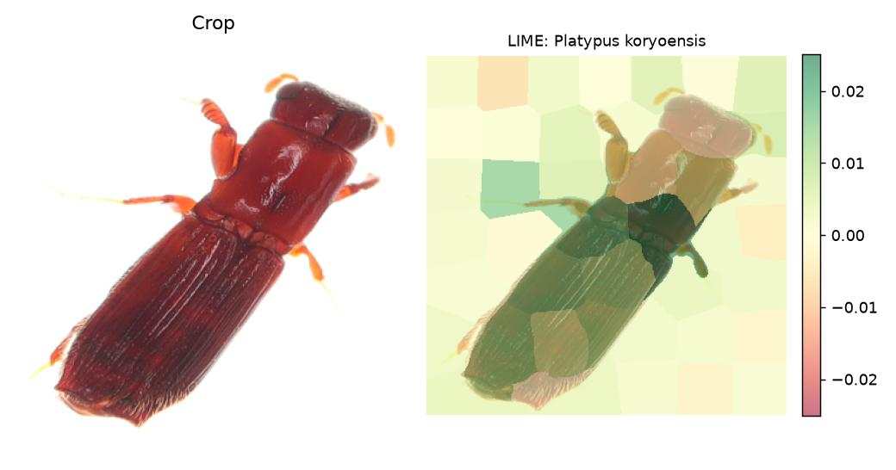 |
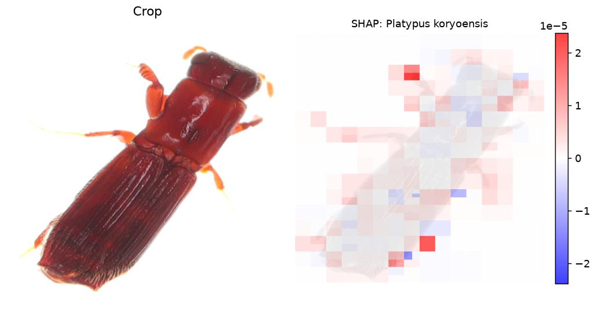 |
Detectors are explained through their highest confidence per class, zero-shot detectors per prompt
(text_prompt= sets the prompts), classifiers through their calibrated species probabilities.